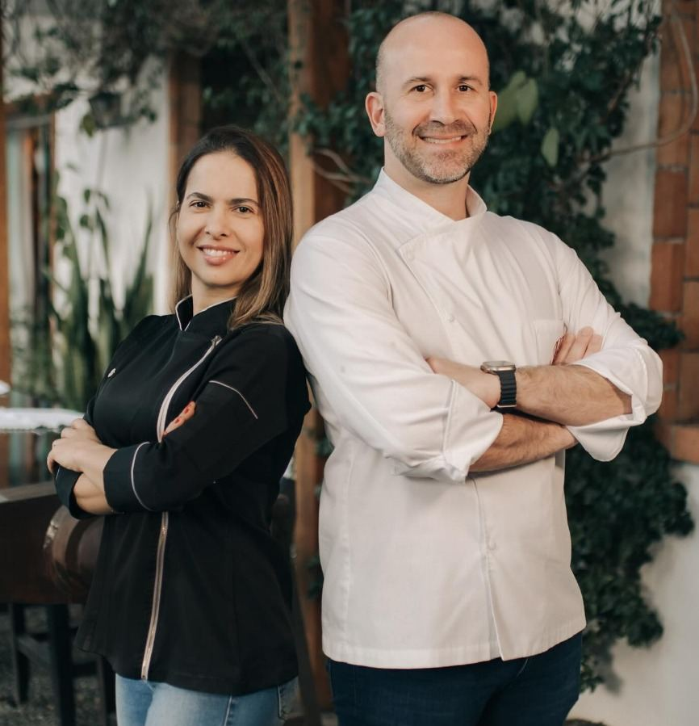

Há lugares que tornam o momento especial.
Gastronomia, vinhos e hospitalidade se encontram no Bistrô du Lú, uma casa familiar em Ipatinga feita para apreciar a boa mesa e aproveitar cada momento.
Uma casa feita para receber.
Mais do que o lugar à mesa, o ambiente também faz parte da experiência. Descubra os espaços do Bistrô du Lú e encontre o cenário para o seu próximo encontro.

Uma história que se encontra à mesa.
O Bistrô du Lú nasceu de uma iniciativa familiar e carrega, em sua essência, o prazer de receber bem. Por trás da cozinha e de cada encontro, estão as pessoas que dão vida à casa e fazem da gastronomia uma parte dessa história.
A paixão pela gastronomia fez do Lu um chef dedicado.
A admiração pelos vinhos levou Raquel a se tornar sommelier.
O amor uniu toda a família e trouxe os filhos para trabalharem juntos na casa.
Seu próximo momento especial começa aqui.
Escolha uma data e venha conhecer o Bistrô du Lú.
Prefere conversar antes? Fale pelo WhatsApp
Parte do cardápio também vai com você.
Faça o pedido online e retire no bistrô.
- Retirada
- Terça a sábado, 19h — 23h
Domingo, 12h — 15h
Esperamos você.
Estamos em Ipatinga, Minas Gerais. Consulte nossa localização, confira os horários de funcionamento e planeje sua visita.
Rua Jequitibá, 910 — HortoIpatinga · MG, 35160-306
- Terça a sábado
- 19h — 00h
- Domingo
- 12h — 16h
- Segunda
- Fechado
Cozinha até 23h · domingo até 15h